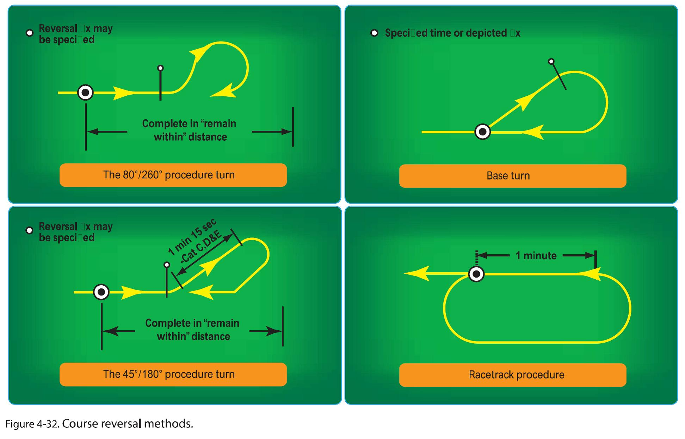

To learn the standard procedure turn and how to conduct it
To learn the types of procedure turns
To learn how to read the instrument approach chart (IAP)
Introduction of circling approach (at the last VOR approach)
Motivation
Why VOR approach:
VOR is one of the most widely used non-precision approach types.
VOR approaches use VOR facilities both on and off the airport to establish approaches
and include the use of a wide variety of equipment, such as DME and TACAN. VOR approaches
can provide MDAs as low as 250 feet above the runway
Why Procedure turns:
PTs are also called “course reversal”. Some approach procedures do not permit straight-in approaches
unless pilots are being radar vectored. In these situations, pilots are required to complete a procedure turn or other
course reversal, generally within 10NM of the PT fix, to establish the aircraft inbound on the intermediate or final
approach segment.
Threshold Knowledge Test
How to find a position
How to track inbound or outbound from the station
How to intercept and track inbound or outbound from the station
Essential Background Knowledge
Non-precision approach:
A non-precision approach is an instrument approach and landing which utilizes lateral guidance but does not utilize
vertical guidance. (ICAO Annex 6)
Types of Procedure turns:

When procedure turns should not be performed:
When being radar vectored
When on a timed approach from a holding fix
When the chart specifies “NoPT”
Procedures:
45/180 procedure turn procedure:
Track inbound to the station directly (using VOR #1)
Set VOR #2 on outbound radial for procedure turn (ex., if the final course is 073, set 253 on TOP)
After the passage of the station, perform 5 T’s
Intercept outbound radial using VOR #2 (= reciprocal radial of the course) (ex., 253 radial)
Track outbound on 253-radial for 1 min and set VOR #1 to the final course 073 on TOP
After 1min outbound, set heading bug to 208˚ and fly 1min outbound on that heading
After flying outbound on 208˚ heading, turn right to reciprocal heading of 028˚ and intercept the final course (= make the needle center)
Set the VOR #2 on the final course (ex, 073 on TOP and TO flag) for redundancy
VOR Approach:
Maintain above 2000’ until “YVR” VOR
After the passage of the “YVR” VOR station, perform 5T’s
Set the time, if the approach speed is 100kts, it will take about 3min 6 seconds from “YVR” VOR to the MAP (also refer the DME, MAP is 5.1 DME from “YVR” VOR)
Set heading but on missed approach heading
Go down until MDA and perform missed approach at the MAP
Non precision MAP fixes are identified in a number of ways:
Fixes identified by additional terrestrial Navaids eg intersections between the localizer and radial directions from other Navaid beacons like VORs, NDBs, etc..
Fixes identified by DME slant ranges.
Fixes identified by flying a linear course from an identified FAF at a specific airspeed for a specific time.
Fixes identified by area navigation systems.
Fixes identified by specific GNSS waypoints (RNAV GPS).